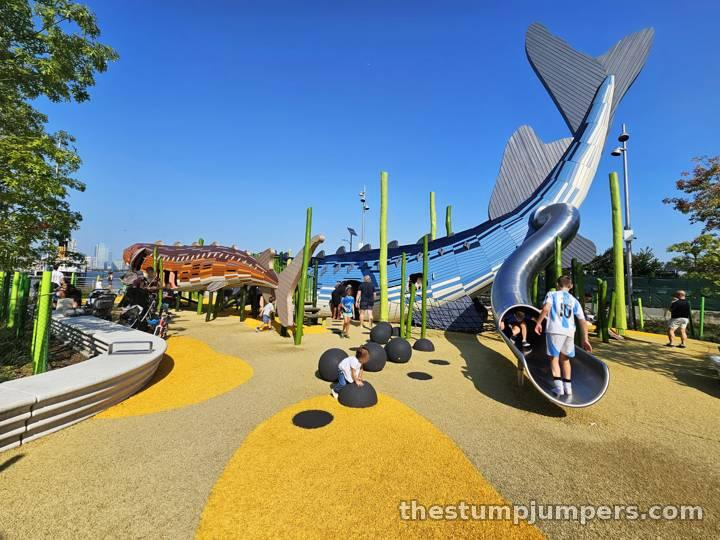
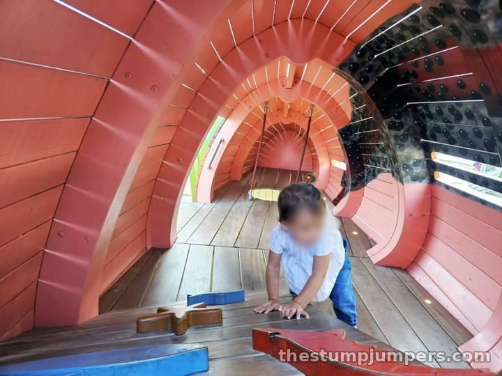
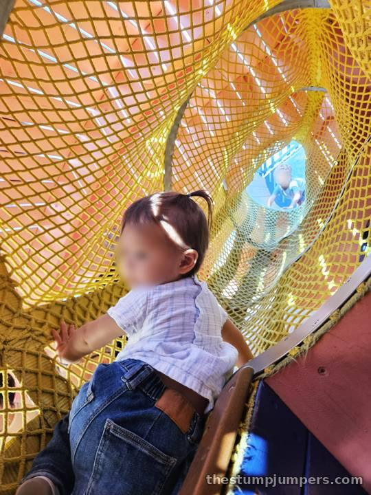
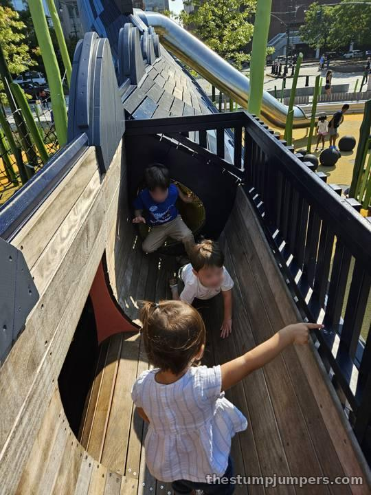
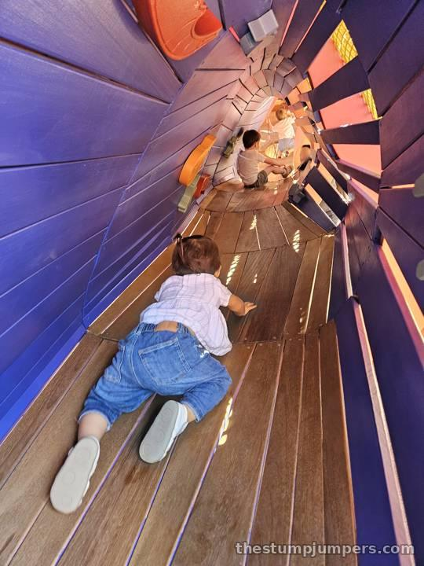
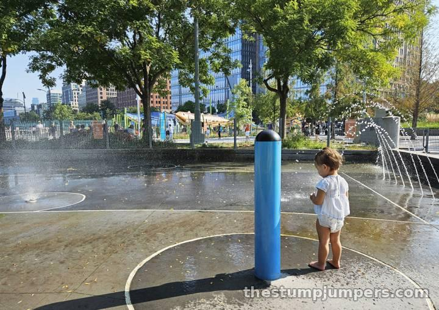

This is a great multi-zone playground, and it's definitely worth the trip. The highlight is the pair of giant sturgeon — an Atlantic sturgeon and a shortnose sturgeon, both endangered Hudson River natives — built by the same Danish company that made the pipefish at Chelsea Waterside. They're fun for kids and for active parents alike. What makes them special is that they don't feel like a playground. They feel like a giant statue you're somehow allowed to climb all over. You can even clamber right onto the top and ride one like a seahorse.


Kids can crawl all the way through the insides, too, which leads to a local tradition: the lost-child panic. There's always a dad shouting “Hudson!” or “Ava!” or “Jaxerton!” into a fish while his kid plays happily somewhere in the tail. For the record, parents do fit inside. But know going in that line of sight is limited, so this isn't the place to sit on a bench and scroll Instagram.


Around the sturgeon are more fun things: climbing nets, rubbery lumps, and misters that make a cloud of steam around some sculpted shrimp. The regular playground next door is pretty darn fun too. It has most of the usual stuff, including a splash pad, plus a delightfully off-kilter merry-go-round of sorts. There are serviceberry trees planted around, and in spring they have edible berries. Be prepared for weird looks, but they're delicious.

Right in the middle, between the fish and the other playground section, there's a public bathroom, which every parent will appreciate. On top of all that, there's a mini golf course, an oyster bar on a boat, and volleyball courts nearby, so the grown-ups are well looked after.
Verdict: worth the trip. The only downsides are that it's a little hard to get to, and it gets extremely busy on weekends. Go early.
By bike: right on the Hudson River Greenway at North Moore Street. On the run: an easy stop on a Greenway run through Tribeca. By train: 1 to Franklin St, then walk west to the river at North Moore Street.